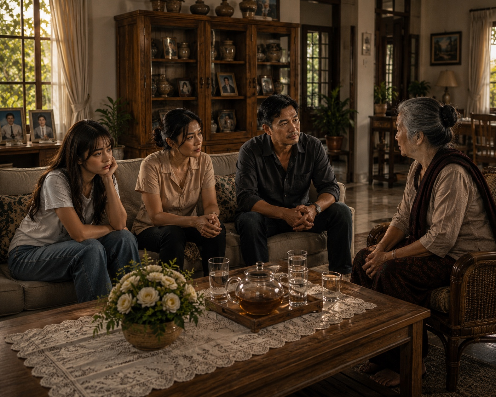

Summary
I’m a remote virtual assistant open to all kinds of VA work, from admin support, data entry and research to AI video and content creation. I also have an IT support background in remote troubleshooting, software setup and basic network checks. I learn new tools quickly and follow client instructions and workflows closely.
Open to any virtual assistant role, and to remote projects in AI video, video editing and technical support.
Work
Kindarooza, my YouTube channel
Original animated stories for children that teach kindness, honesty, empathy, courage and friendship. The stories use AI-generated visuals and are edited into finished episodes.
Mesa and Mark, my vlog channel
Travel and daily-life vlogs that I edit with structured cuts, music, transitions and subtitles that follow the story.
Watch Mesa and Mark on YouTube
AI images

Channels
- Kindarooza, animated stories for children
Original stories about kindness, honesty, empathy and friendship. - TikTok, short-form content
Hooks, captions, pacing, music and transitions for vertical video. - Mesa and Mark, vlog editing on YouTube
Structured cuts, music, transitions and subtitles that follow the story.
Experience
Channel Creator, Kindarooza
YouTubeMake animated, AI-generated story videos for children, each built around a moral lesson such as kindness, honesty or friendship, and edit them into finished episodes.
AI Video, GIF and Visual Content Creator
Independent, project-basedTurn client scripts, images and visual guides into several scene options, then pick and combine the best into a finished sequence. Edit images by replacing people, changing gestures and adjusting details. Write AI-video prompts for movement and action, then generate and refine the clips.
Personal Content Creator
Video editing, AI content, social mediaEdit my own short-form and vlog content with cuts, pacing, captions, music, transitions and story flow, while testing AI-generated images and video.
Freelance PC Technician, Remote
2024 to presentProvide remote troubleshooting and technical support for software and hardware issues. Run system diagnostics, software installation, configuration and optimization. Help users with workstation, application, internet and connectivity problems, run basic connectivity checks, and escalate when deeper infrastructure support is needed.
Image Annotation Specialist, Woflow
2023 to 2024Research requested products or images on official sites and authorized sellers, collect the correct link and image, and check that the image matches the item, following project guidelines for accuracy.
Personalized Internet Ads Assessor, TELUS International Digital
2021 to 2023Review search queries, ads and landing pages and rate whether each is relevant, appropriate or problematic. Also review age-restricted or policy-sensitive content, including YouTube and app-store listings.
B2B Lead Generation and Data Entry, Upwork
2021 to 2022Research businesses by client criteria and location, collect owner, email, phone, website and registration details, and organize them in spreadsheets. Also moved researched data into Google Sheets.
Computer Shop Attendant, GHUB Computer Shop
Aug 2019 to Feb 2020Gave customer support, troubleshot computers, installed software, helped with sales and did basic repairs. Assisted with workstation setup and common computer and internet-connectivity issues.
Graphic Designer and Digital Printing Operator, YZA Coloured Digital Printing Company
Jun 2013 to Jul 2016Made layouts and graphics in Photoshop, Illustrator, InDesign and Acrobat Pro, prepared digital production files, and operated digital and wide-format printing equipment, including Xerox and binding work.
Data Encoder and Administrative Support Intern, Quezon City Hall
Jan to Mar 2013Encoded and organized data and supported document management, payroll and administrative activities.
Skills
Virtual assistance
- Data entry and spreadsheets
- Internet research
- Lead generation
- Technical documentation
- File organization and admin support
- Customer-facing support
Creative
- AI video creation
- AI image creation
- GIF and animation
- Image editing
- Video editing
- Social media content
IT support and networking
- Remote technical support
- Hardware and software troubleshooting
- Software installation and optimization
- Basic computer hardware repair
- LAN, Wi-Fi and Ethernet fundamentals
- TCP/IP, DHCP and DNS basics
- Diagnostics with ping, ipconfig and tracert
Education
Graduate Diploma in Information Technology
Jun 2011 to May 2013STI College, Fairview Campus, Quezon City
Tools
AI generationGoogle Flow, Kling AI, Lumina
Editing and designCapCut, Filmora, Adobe Photoshop, Adobe Illustrator, Adobe InDesign, Adobe Acrobat Pro, Canva
OfficeMicrosoft Excel, Word and PowerPoint
Currently learningHubSpot, Salesforce, QuickBooks
Contact
Need a virtual assistant, a video made or edited, or a tech problem solved? Send me a message.
markneilrobias@gmail.com